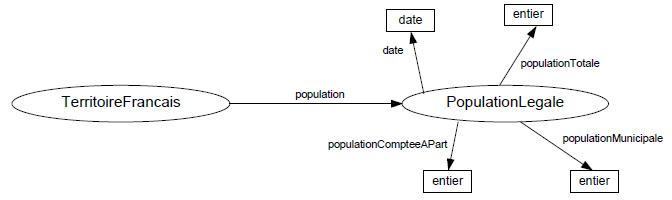

L'Insee a défini quelques vocabulaires RDF pour décrire ses données. C'est le cas par exemple des ontologies relatives au Code officiel géographique ou aux populations légales du Recensement de la population. L'Institut a également collaboré au développement de certains vocabulaires spécialisés, par exemple XKOS.
L'Insee utilise ausssi des vocabulaires RDF définis par ailleurs, par exemple le vocabulaire Data Cube qui permet de décrire des données statistiques dimensionnelles (tableaux, cubes, hypercubes) selon un modèle de données inspiré du standard SDMX.
On décrit dans les paragraphes ci-dessous les vocabulaires RDF (appelés également ontologies OWL) définis par l'Insee.
L'ontologie géographique de l'Insee couvre un champ plus grand que celui des données du COG actuellement publiées.
Pour le moment, les données démographiques publiées se cantonnent aux populations légales issues du Recensement de la population ; aussi l'ontologie qui modélise ces données est-elle très simple. Le concept central est celui de "population légale", qui est rattaché à un territoire par une propriété "population" et qui porte via des propriétés dédiées les chiffres correspondant aux populations municipale, comptée à part et totale, ainsi que la date de référence de ces différents chiffres.

L'espace de noms dans lequel sont définies la classe PopulationLegale et les
différentes propriétés décrites ci-dessus est http://rdf.insee.fr/def/demo# (NB
: TerritoireFrancais est défini dans l'ontologie géographique).
L'ontologie démographique est accessible au format Turtle ici. Elle est également référencée sur le site Linked Open Vocabularies (voir cette page).